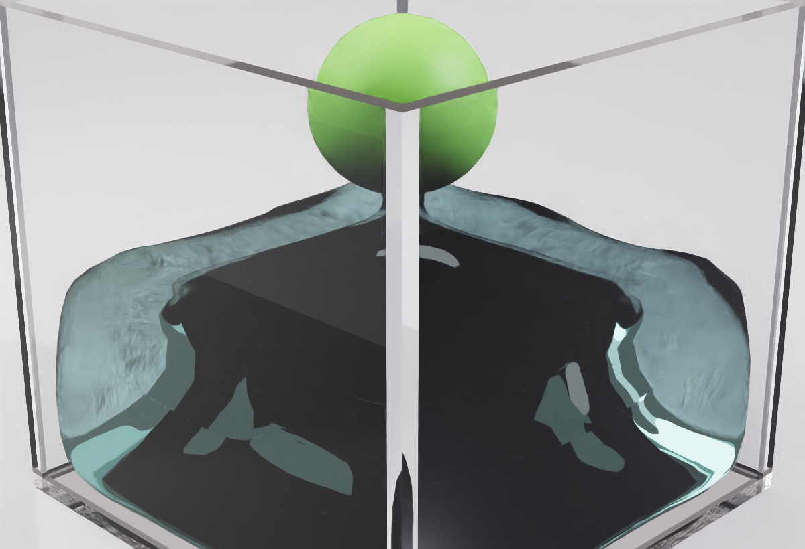
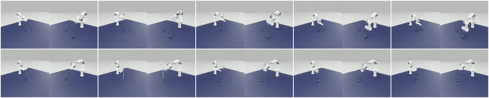

透明烧杯补齐可承液碰撞结构
每只烧杯使用 145 个开放式碰撞单元，杯壁和杯底封闭、杯口保持开放。玻璃负责外观，碰撞单元负责让 3 mm 粒子真正留在杯内。
Isaac Sim 4.1 已完成一条自然结束的专家轨迹。专家控制器闭合夹爪后由已验证的合成附件带动真实烧杯，液体运动仍由 PhysX 计算；程序在每个 observation 内把同帧粒子重建成连续液面，再交给两台模型相机。最终结果可用于评测链路验证，不再是离线演示回放。
最终链路仍是“物理 → 表面重建 → RTX 渲染 → 模型相机”。下方两支 1280 × 720 视频来自同配置的高清同步复跑：每个 observation 先完成原有模型输入和物理记录，再在不推进物理时间的前提下切换 Viewport 相机抓帧；它们不是把 256 × 256 画面插值放大。
它是模型实际接收内容的直接证据，不能被高清展示视频替代。原始 episode 的结束帧为源杯 0、目标杯 3,583、传输区 10、桌面 7、桌下 0、异常 0，最后 100 帧稳定。
高清同步复跑是另一条通过的 episode：源杯 0、目标杯 3,568、传输区 31、桌面 1、桌下 0、异常 0。两次运行共享配置与相机合同，但不是同一个 episode；高清复跑记录中的 contact_grasp_claimed=false，因此这里只声明专家合成附件带杯和液体物理成立，不声明真实接触抓取已经完成。
结论口径：两条证据都针对当前场景、液量和专家动作，不代表任意容器、任意液量或任意动作都已经适配。高清 Viewport 只用于人工复核，没有改变评分粒子、模型相机分辨率、控制动作或成功判定。
这次没有把显示球继续放大，也没有换成长方形缸。改动分别解决真实烧杯承液、4.1 抓取稳定、专家轨迹对准和同帧液面呈现。
每只烧杯使用 145 个开放式碰撞单元，杯壁和杯底封闭、杯口保持开放。玻璃负责外观，碰撞单元负责让 3 mm 粒子真正留在杯内。
Isaac Sim 4.1 中，夹爪直接撞击 145 个杯壁单元会造成控制数值发散。现在只过滤源杯与 Franka 刚体对，杯子与液体、桌面、目标杯之间的碰撞全部保留。
机械臂不再朝几何杯心钻入，而是以杯体局部偏移和校准姿态完成接近、闭合与抬升。第 420 帧建立合成附件时，位移和旋转跳变均为 0。
PickController 负责接近、闭合和抬杯，PourController 负责移动到目标杯、检查入口姿态、倾倒和回正。第 561 帧进入完整刚体倾倒，切换没有位置跳变。
评分始终读取原始粒子；同一批粒子再经过密度场和 Marching Cubes 形成连续水体。首帧配置 64 次不推进物理的 RTX 预热，本次抽帧未出现黑屏或坏块；尚未做独立的预热开关 A/B，因此不把改善完全归因于预热。
三种方案解决的问题不同，不是同条件性能排行：第一种是静置起点，第二种是视觉参考，第三种才是最终方案。
细物理粒子有利于真实小烧杯碰撞，直接把它们画成大球却会重叠成泡沫状。这个阶段证明了持液可行性，没有解决倒液视频的连续水体观感。

参考场景使用约 30 cm 宽的规则方缸、简单盒状内壁和约 20 mm 粒子。USD 内配置 4 次网格平滑和 4 次法线平滑，再由 OmniGlass 提供透明与反射，因此液体轮廓天然醒目。它不是当前烧杯使用的外部表面重建管线。

最终方案借鉴 InternData 公开示例的 PBD 组织和连续水体方向，但在 LabUtopia 中自行完成真实烧杯碰撞、专家控制、粒子评分、在线重建和模型相机合同。
最终 episode 的 MP4 按仿真逻辑时间编码，所以 30 FPS 是逻辑播放速度。真实壁钟吞吐需要看每个 observation 从四个物理子步到视频写入的完整耗时。
性能边界：3.03 FPS 从每帧物理开始计到视频帧就绪，不含 controller step 和证据 JSONL 追加；2.96 FPS 是整个 episode 的壁钟结果。5.10 FPS 是同一次运行扣除重建与 USD 写网格后的推导值，不是另跑一条“无液体基线”，且仍包含液体物理、相机和 RTX。当前已经解决在线同帧正确性，但尚未解决壁钟 30 FPS 实时计算。
页面内可直接查看最终 MP4 和精简证据清单；H5、逐帧 JSONL 与独立 USD 包保留在同事可访问的共享文件系统，页面列出其完整路径，但不把这些 outputs/ 文件伪装成 Pages 下载。
outputs/online_fluid_eval_20260715/v16_v4_full_action_isaacsim41/video/episode_0_h264.mp4
H.264、512 × 256、30 FPS、953 帧、31.8 秒；左右两半分别对应两台模型相机。
outputs/presentation_hd_20260716/final_viewport_full
两支 H.264、1280 × 720、30 FPS、954 帧视频；同目录保存原模型拼接视频、逐帧同步记录、配置、H5 和物理证据。
outputs/collect/2026.07.15/20.15.27_Level1_pour_online_fluid_v2/online_fluid_evidence/observations.jsonl
逐帧记录粒子分区、表面哈希、相机哈希、附件状态以及重建、渲染、相机和总耗时。
outputs/collect/2026.07.15/20.15.27_Level1_pour_online_fluid_v2/dataset/episode_0000.h5
505 帧，对应 observation 447–951；脚本化夹取段不在 H5 中。文件只包含自然结束并通过专家门禁的 episode_0000。
assets/chemistry_lab/lab_001_fluid_eval/lab_001_level1_pour_interndata_liquid_v1.usda
上方源 USD 随仓库提交；独立资产包位于共享文件系统 outputs/usd_asset_packages/lab_001_level1_pour_interndata_liquid_v1_20260714，用于裸打开检查场景、双烧杯、内壁和初始装液。
level1_pour_rgb_v4_full_action_30hz
SHA-256：433993330829f0bdfe5ff98f9d2428eb34e9b16e59fde9ca9b8d9f51a75d6ccf
v4 固定双机位变换、光学参数、256 × 256 RGB、30 Hz 和 1/30 秒 rendering_dt；已有 v2/v3 数据或模型不能无声明混用。
原始模型证据独立审阅 10 个关键帧后给出高置信度 PASS。新增 720p 复跑的液柱、目标杯留液、资产加载和画面连续性通过，但整体视觉结论为 WARN：透明源杯与夹爪不构成可信的真实接触抓取画面。它不阻塞当前液体物理复核，但阻塞“真实接触抓取已完成”的宣传口径。